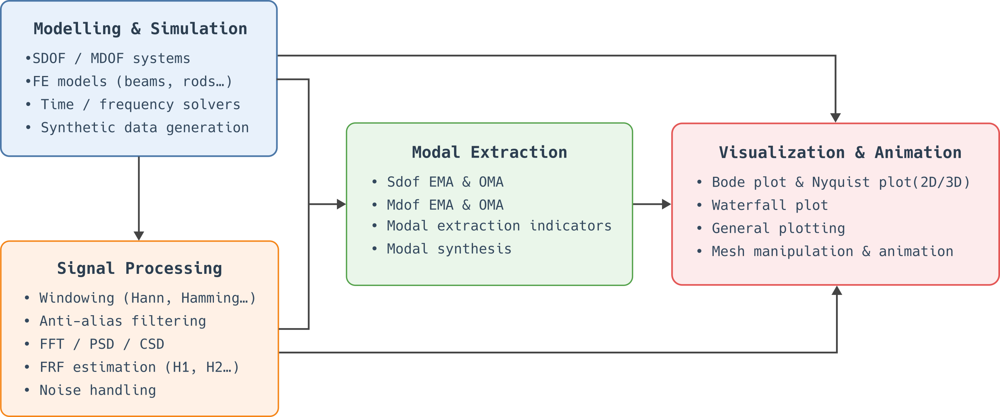

StructuralVibration.jl


StructuralVibration.jl is a Julia package designed to generate vibration data for mechanical systems. This package can be used for educational and research purposes. As a teacher, you can use it to illustrate vibration theory and its practical implementation. As a researcher, you can use it to test new methods on synthetic data.
Start with the Getting started page: in ten minutes, it takes you from installation to your first modal identification. Then pick a tutorial matching your needs:
- I am discovering structural dynamics → Getting started and the interactive Apps
- I do modal analysis → Experimental modal analysis, Operational modal analysis, Using your own models and data
- I test numerical or inverse methods → From model to virtual measurement, Choosing a time integration scheme, Noise estimation and denoising
- I am looking for a specific function → the reference sections (Models, Solvers, Signal processing, Modal extraction)
The package is under active development and is developed as part of my research activities on source identification in structural dynamics and acoustics.
Software design
StructuralVibration.jl is designed according to certain guidelines to ensure that it is user-friendly, efficient, extensible, and composable. These guidelines include:
Type stability: All of the package’s functions are designed to ensure type stability, allowing for efficient execution and better performance.
Type genericity: The package is designed to be type-generic, enabling users to work with various data types, such as
Float64,ComplexF32, while maintaining performance and flexibility.Composability: The package is design to be compatible with other Julia packages. For example, users can define a state-space model using
StructuralVibration.jland perform the resolution using another package such asDifferentialEquations.jl.Reliability:
StructuralVibration.jlincludes a comprehensive documentation and a test suite that ensures the reliability and correctness of the package. The documentation provides detailed explanations of the theoretical background of the package’s features, as well as the API of the data types and functions implemented. Various examples are also provided to help users get started.Modularity: The package is based on a modular architecture that clearly separates the different functionalities (Modelling & Simulation, Signal Processing, Modal Extraction, Visualization & Animation) and facilitates the maintenance and extension. The general architecture of the package is presented in .

Features
The package provides the following features:
Mechanical models
- Discrete models
- Spring-mass-damper SDOF system
- Spring-mass-damper MDOF system
- FE models of bar, rod, strings and beams
- Continuous models
- Longitudinal bars
- Torsional bars
- Strings
- Beams
- Rectangular plates
- Rectangular membranes
- State space model
- Continuous state-space representation
- Discrete state-space representation
- Zero-order hold (ZOH)
- First-order hold (FOH)
- Band-limited hold (BLH)
- RK4
Vibration data generation
- Excitation signals
- Rectangular wave
- Triangular wave
- Hammer impact
- Smoothed rectangular wave
- Sine wave
- Half-sine pulse
- Harversine pulse
- Swept sine wave
- Gaussian pulse
- Colored noise
- Solution for SDOF systems
- Free response
- Forced response due to a harmonic force or a base motion
- Forced response due to any external force or base motion (Duhamel’s integral)
- Time-domain integration schemes for linear second order systems
- Central difference scheme
- RK4
- Newmark-beta method
- Linear acceleration method
- Fox-Goodwin method
- HHT
- WBZ
- Generalized-alpha
- Mid-Point rule
- Frequency-domain calculations for linear systems
- Frequency spectrum
- Modal summation
- Direct method
- Frequency response function (FRF)
- Modal summation
- Direct method
- Frequency spectrum
- State-space solvers
- Time domain
- RK4 for continuous systems
- ZOH, FOH, BLH, RK4 for discrete models
- Frequency spectrum
- Modal summation
- Direct method
- Frequency response function (FRF)
- Modal summation
- Direct method
- Time domain
- Measurement noise
- Additive Gaussian white noise (agwn) with a prescribed SNR
- Additive Colored noise (acn)
- Multiplicative noise
- Mixed - agwn + multiplicative noise
Signal processing
- Measurement noise variance estimation algorithms from noisy data
- Regularization-based estimation
- D’Errico’s method - Link to the Matlab version
- SNR estimation from estimated measurement noise variance
- Denoising algorithms
- Regularization
- Kalman filtering
- Signal preprocessing
- Detrending data using polynomial fit
- Gradient calculation using interpolation
- Signal estimation
- Transfer functions estimation (H1, H2, H3, Hv)
- Welch method (PSD, ESD, Autopower, Autopower linear)
- Signal spectrum estimation
Modal analysis
- Experimental Modal Analysis - SDOF methods
- Peak picking method
- Circle fit method
- Least-squares fit method
- Experimental Modal Analysis - MDOF methods
- Least-squares complex exponential (LSCE)
- Least-squares complex frequency (LSCF)
- Polyreference least-squares complex frequency (PLSCF)
- Stabilization diagram
- Operational Modal Analysis - EMA-based methods
- EMA-based approaches (LSCE, LSCF, PLSCF)
- Frequency-spatial Domain Decomposition (FSDD)
- Stochastic Subspace Identification (SSI)
- Covariance-driven SSI (CovSSI)
- Data-driven SSI (DataSSI)
- Operational Modal Analysis - ODS-based methods
- Extraction of Operational Deflection Shapes (ODS) from response spectra
- Extraction of Operational Deflection Shapes (ODS) from cross-spectral density matrices
- Analysis indicators
- Modal Overlap Factor (MOF)
- Mode overcomplexity value (MOV)
- Mode Phase Collinearity (MPC)
- Mode Complexity Factor (MCF)
- Mean Phase Deviation (MPD)
- Modal Assurance Criterion (MAC)
- Coordinate Modal Assurance Criterion (COMAC)
- Enhanced Coordinate Modal Assurance Criterion (ECOMAC)
- Frequency Response Assurance Criterion (FRAC)
- Complex Mode Indicator Function (CMIF)
- Power Spectrum indicator function (PSIF)
- Modal synthesis
- Estimation of the FRF/Half-spectrum residuals
- Reconstruct FRF/Half-spectrum from modal parameters
- Modal density estimation
- Finite difference method
- Global polynomial fitting
- LOWESS
- Cubic spline interpolation
Visualization
- Bode plot
- 2D and 3D Nyquist plot
- Waterfall plot
- General 2D plot
- Mesh visualization
- Mesh animation
Reproducibility
License
This package is under MIT License.
How to cite this package
If you use StructuralVibration.jl in your research, please consider citing it as follows:
[1] M. AUCEJO and contributors, « StructuralVibration.jl ». Zenodo, 2026.